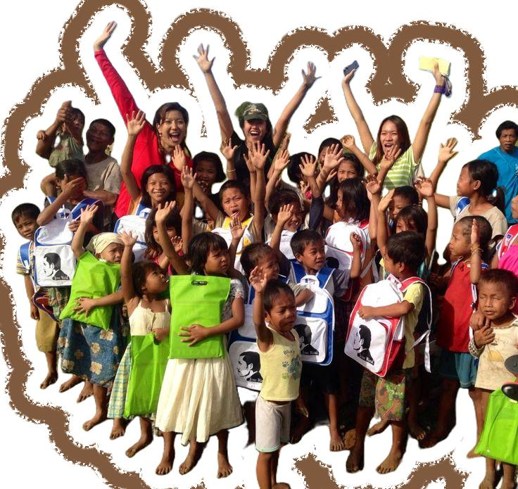

Sistem informasi geografis yang menyajikan data dan sebaran panti asuhan di Kota Pekanbaru, Provinsi Riau secara akurat.

Panti asuhan adalah lembaga kesejahteraan sosial nirlaba yang menyediakan tempat tinggal, perawatan, dan pendidikan bagi anak-anak yang kehilangan orang tua (yatim/piatu/yatim piatu) atau anak-anak telantar. Lembaga ini berfungsi sebagai pengganti peran orang tua untuk memastikan kebutuhan fisik, mental, dan sosial anak terpenuhi hingga mereka dewasa.
Melalui website Panti Asuhan ini, masyarakat, pemerintah, dan pihak terkait dapat dengan mudah mencari serta memperoleh informasi panti asuhan yang valid.
Data koordinat langsung dari QGIS dengan akurasi tinggi untuk menjamin ketepatan lokasi.
Dilengkapi fitur pencarian untuk mempermudah Anda menemukan panti asuhan berdasarkan nama atau wilayah tertentu.
Menyajikan detail penting mulai dari nama panti, alamat lengkap, hingga wilayah kecamatan di Kota Pekanbaru.
Aplikasi dapat diakses kapan saja melalui browser tanpa perlu mengunduh aplikasi tambahan.
Gunakan panel navigasi pada peta untuk menyaring wilayah kecamatan, mengubah tampilan peta dasar, serta mencari lokasi panti asuhan.
Menyediakan hunian yang aman, nyaman, dan layak bagi anak-anak yang membutuhkan tempat berlindung dan pengasuhan yang penuh kasih sayang.
Mendukung kebutuhan pendidikan formal serta keagamaan anak asuh secara komprehensif agar dapat meraih masa depan yang cerah dan mandiri.
Menjadi jembatan transparan bagi para donatur dan orang tua asuh untuk menyalurkan bantuan moral, finansial, maupun logistik materiil.
Menghubungkan kepedulian Anda dengan menyajikan informasi kebutuhan logistik dan kontak panti asuhan secara transparan untuk mempermudah penyaluran bantuan